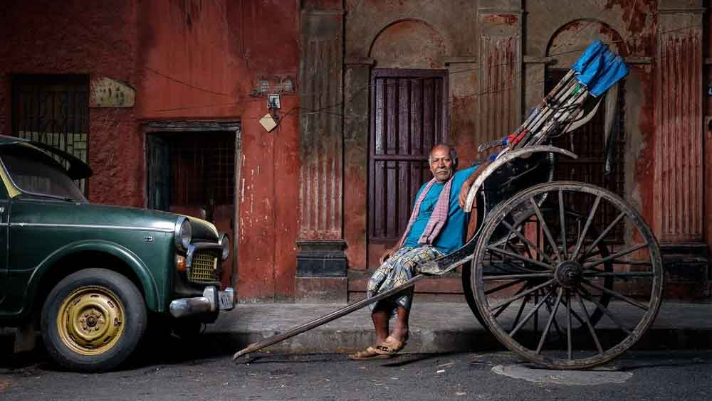
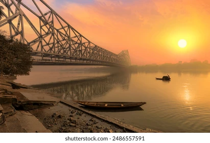
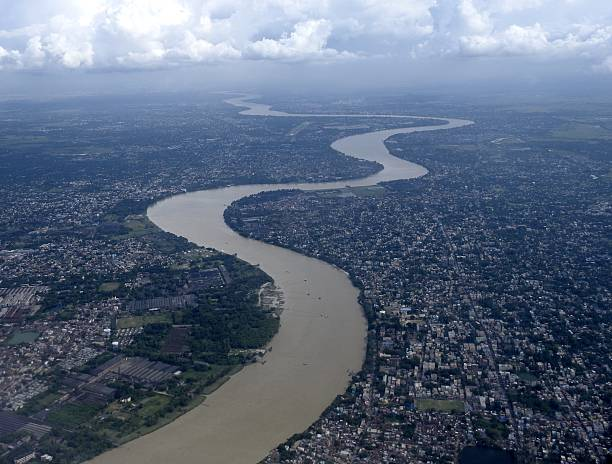
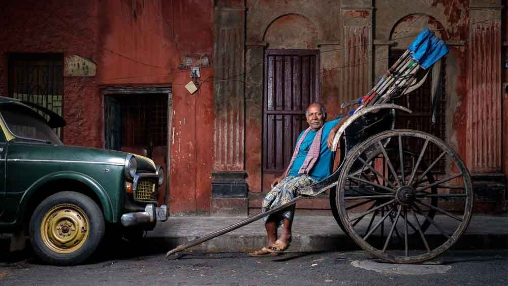
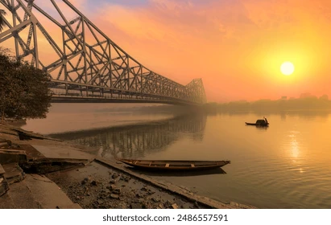
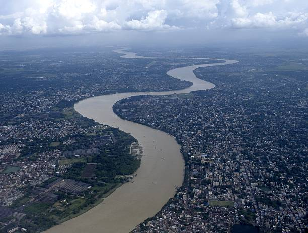

Kolkata: The City of Joy
Kolkata, formerly known as Calcutta, is the capital city of the Indian state of West Bengal. It is renowned for its rich history, cultural heritage, and literary contributions. The city is located on the eastern bank of the Hooghly River and is often referred to as the "Cultural Capital of India."
Heritage and Culture
Kolkata boasts a plethora of heritage sites, including the iconic Victoria Memorial, Howrah Bridge, and the majestic Indian Museum. The city's architectural marvels reflect its colonial past, with buildings adorned with intricate designs and grandeur.
Cuisine
The cuisine of Kolkata is a delightful blend of flavors influenced by its multicultural heritage. From mouthwatering street food like phuchka and kathi rolls to traditional Bengali delicacies such as macher jhol (fish curry) and roshogolla (sweet), Kolkata offers a culinary experience like no other.
Festivals and Events
Kolkata is known for its vibrant festivals and cultural events. The Durga Puja, celebrated with great pomp and fervor, is the most significant festival in the city. Other festivals like Diwali, Eid, and Christmas are celebrated with equal enthusiasm, highlighting Kolkata's diversity.

 




